MultiNode Sync Builder のダウンロード
MultiNode Sync Builder は Microsoft Store より安全にインストール・アップデートが可能です。以下のいずれかの方法でダウンロードページへアクセスしてください。
MultiNode Sync Builder 全機能ガイド
本アプリは、人・システム・タスクなど多様な「ノード」をキャンバスに配置し、それらの相互関係（リンク）をネットワークグラフやガントタイムラインとして可視化する統合データマッピングプラットフォームです。各ノードが持つ「フィールド属性」に応じてサイズ・色・形状・座標が自動スケーリングされます。

👑 無料版 vs 有料版（Premium）仕様比較
有料版にアップグレードすることで、以下のすべての制限が解除され、CSVや画像出力などの高度な機能が利用可能になります。
| 機能 / 制限 | 無料版 | 有料版 👑 |
|---|---|---|
| ノード登録数 | 最大 7 個 | 無制限 |
| カスタムフィールド数 | 最大 3 個 | 無制限 |
| フィールド内選択肢数 | 最大 5 個 | 無制限 |
| CSV インポート / エクスポート | ❌ | 🟢 バリデーション機能付き |
| グラフ画像エクスポート（PNG/SVG） | ❌ | 🟢 高解像度出力対応 |
⌨️ キーボードショートカット早見表
| 操作 | キー |
|---|---|
| 元に戻す | Ctrl+Z |
| やり直す | Ctrl+Y |
| 選択ノードを削除 | Delete |
| プロジェクトの保存 | Ctrl+S |
| 名前を付けて保存 | Ctrl+Shift+S |
| プロジェクトを開く | Ctrl+O |
| 新規プロジェクト作成 | Ctrl+N |
| ノード検索 | Ctrl+F |
| すべてのノードを選択 | Ctrl+A |
| ヘルプを表示 | F1 |
起動とテンプレート読み込み
アプリを起動すると「スタートアップダッシュボード」が開き、言語設定・テンプレート選択・既存プロジェクトの読み込みをすぐに行えます。
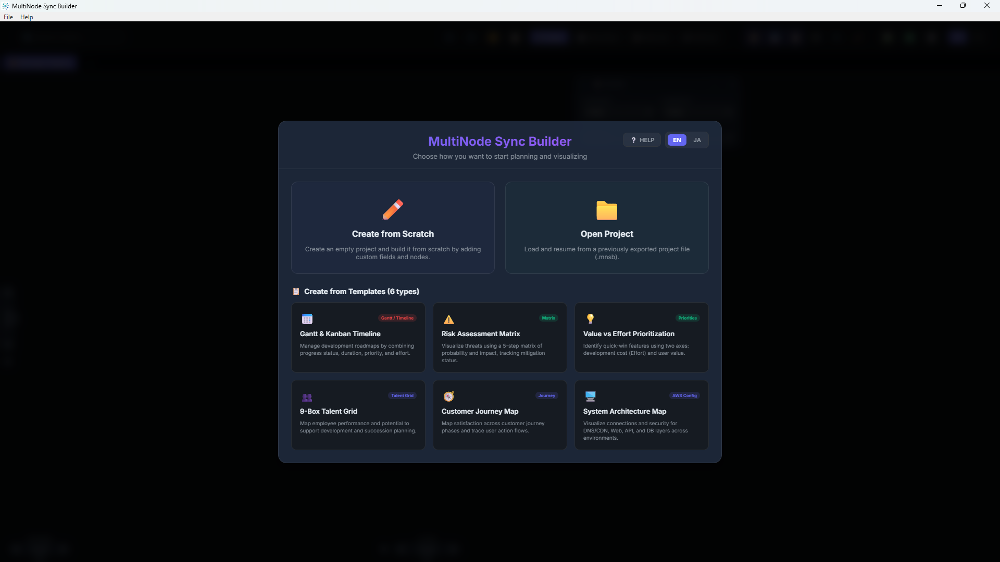
💡 操作イメージ（GIF動画）を見る
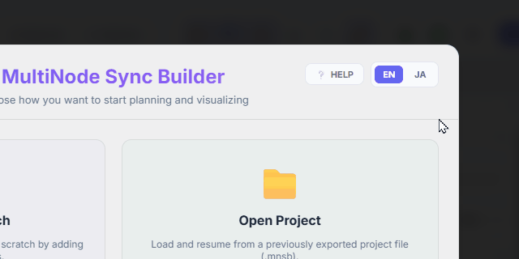
💡 操作イメージ（GIF動画）を見る
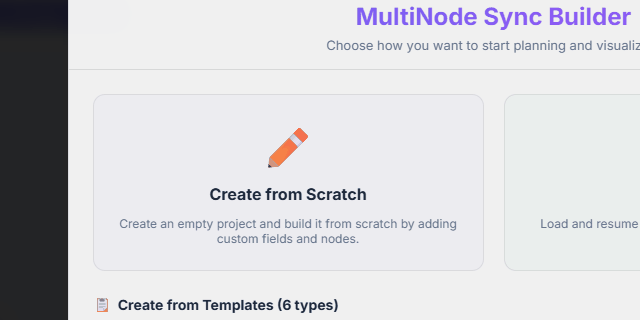
.mnsb ファイルをインポートして作業を再開します。暗号化済みファイルの場合はパスワード入力モーダルが自動起動します。
💡 操作イメージ（GIF動画）を見る
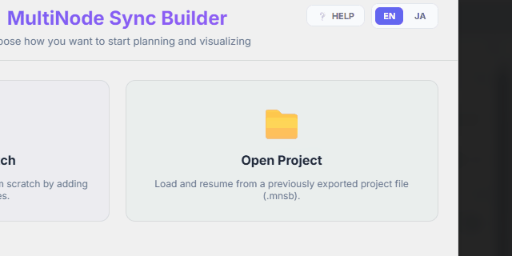
💡 操作イメージ（GIF動画）を見る
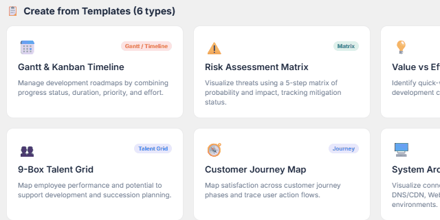
ノード（人・タスク・システム）の操作
アプリの中心となる「ノード」の作成・編集・削除方法を学びます。
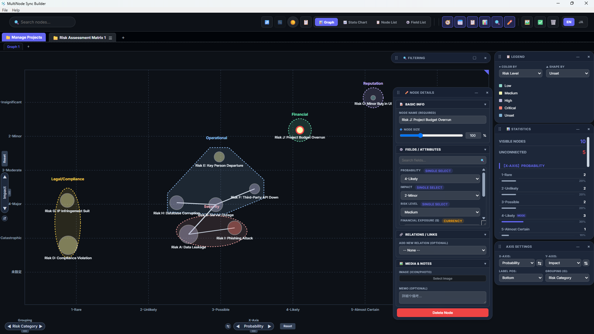
💡 操作イメージ（GIF動画）を見る
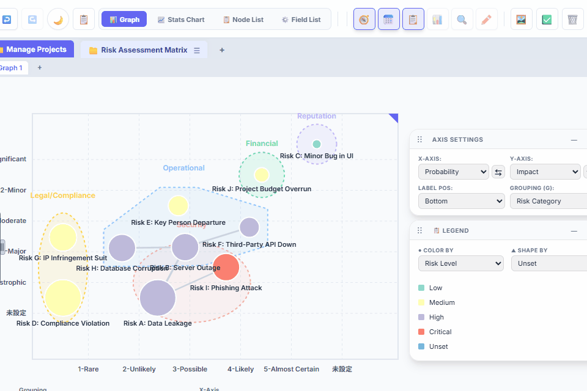
💡 操作イメージ（GIF動画）を見る
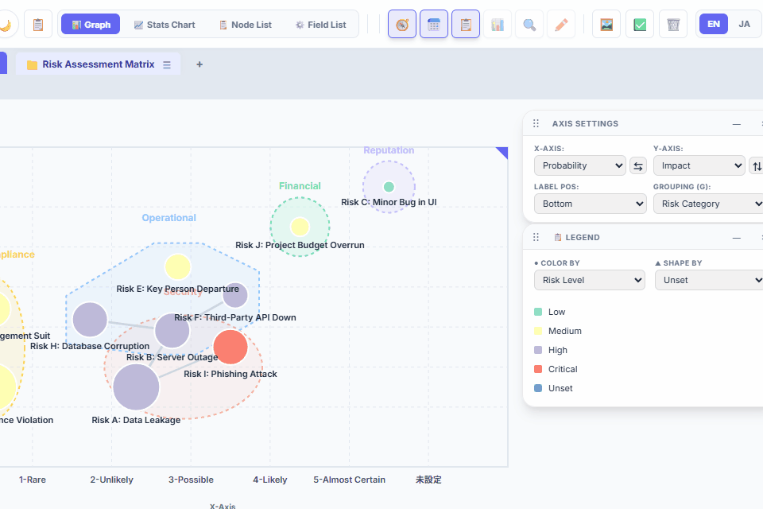
💡 操作イメージ（GIF動画）を見る
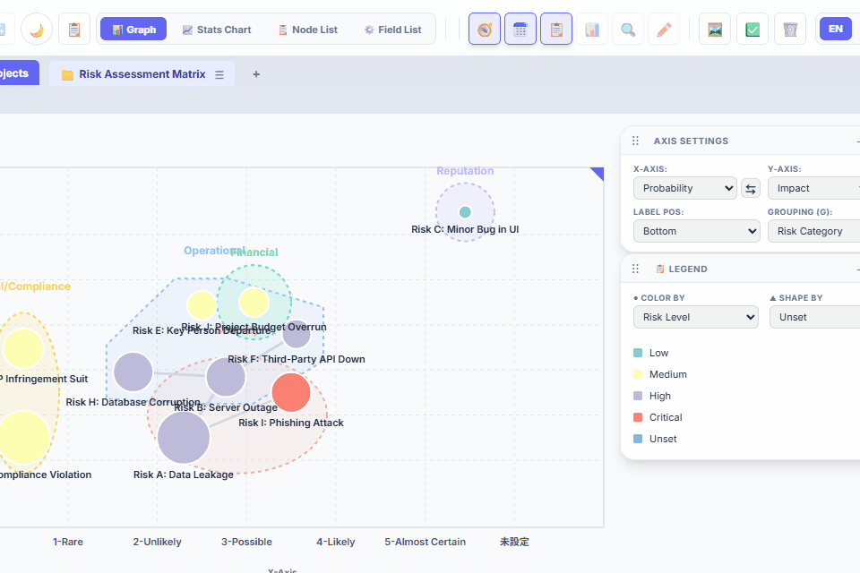
リンク（関係性）の作成と自動太さ調整
ノード間の繋がりをビジュアルに描画します。リンクの太さは手動設定ではなく、繋がっているノードの接続数（次数）に応じて自動的に最適化されます。
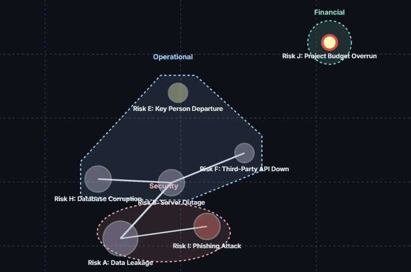
💡 操作イメージ（GIF動画）を見る
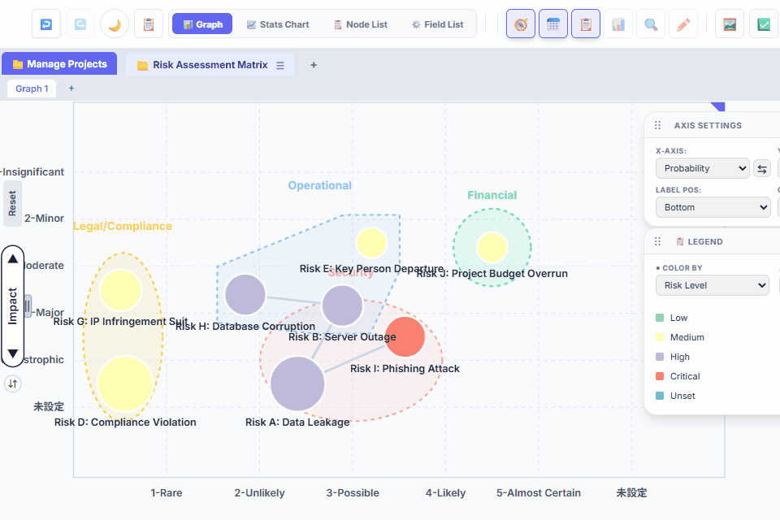
💡 操作イメージ（GIF動画）を見る

ビュー（表示形式）の切り替え
同じデータを「グラフ」「統計グラフ」「ノード一覧」「フィールド一覧」の4つの表示モードで確認・分析・編集できます。ツールバー中央のビュー切り替えセクションで瞬時に切り替え可能です。
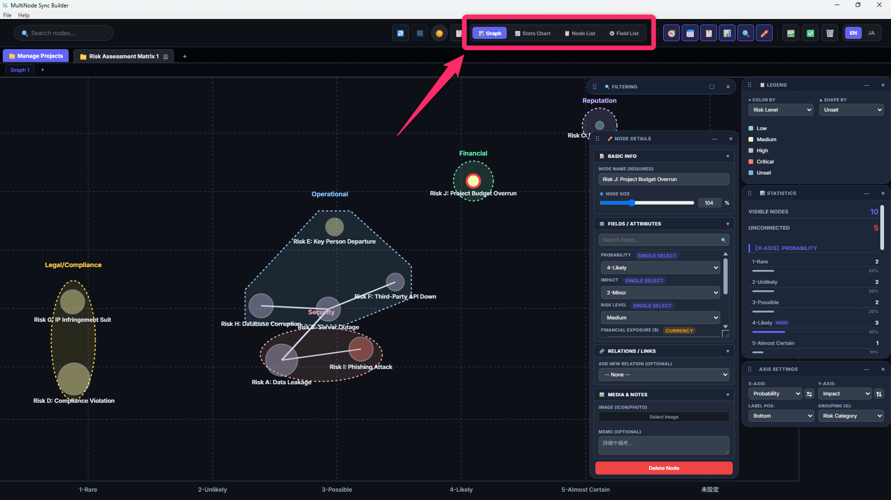
X軸・Y軸のフィールド設定に従ってノードを2次元グリッド上に配置し、関係性を有向グラフとして可視化します。
横軸(X)に「日付（期間）型」のフィールドを設定すると、自動的に横軸が時系列カレンダーになり、タスクの期間を横棒で表示するガントビューに切り替わります。
💡 操作イメージ（GIF動画）を見る
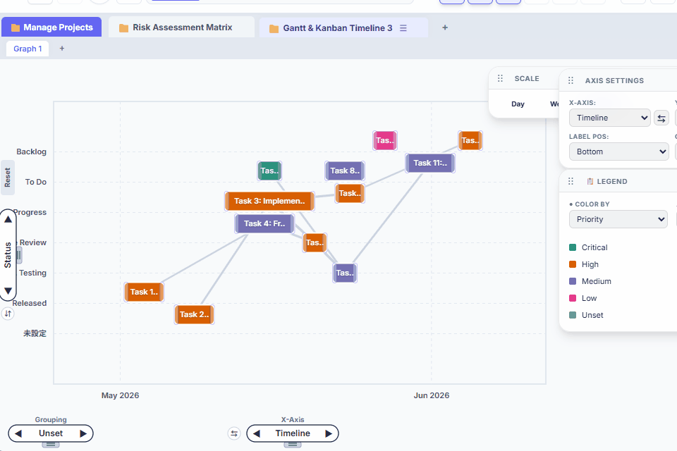
| グラフタイプ | 適した用途 |
|---|---|
| 📊 棒グラフ | カテゴリ別の件数・合計値の比較 |
| 🥞 積み上げ棒グラフ | カテゴリ内の内訳比較 |
| 📈 折れ線グラフ | 数値の傾向や推移の確認 |
| 🍕 円グラフ | 全体に占める割合の確認 |
| 🍩 ドーナツグラフ | 割合をスッキリ表示（中心に数値を表示可） |
💡 操作イメージ（GIF動画）を見る
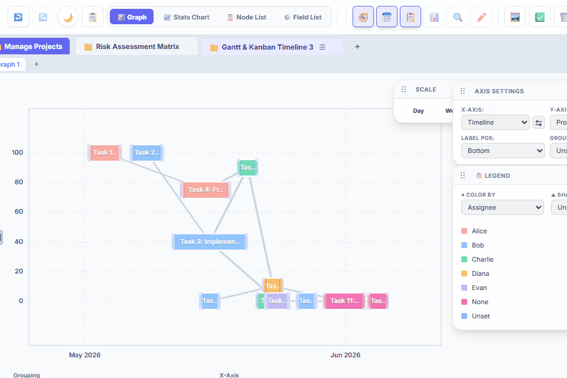
💡 操作イメージ（GIF動画）を見る
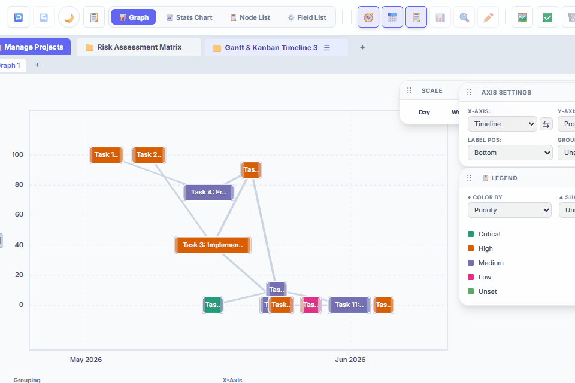
Undo / Redo（元に戻す・やり直す）
すべての操作（ノード追加・削除・フィールド変更・リンク追加など）は操作履歴に記録されており、いつでも安全に取り消し・やり直しができます。

💡 操作イメージ（GIF動画）を見る
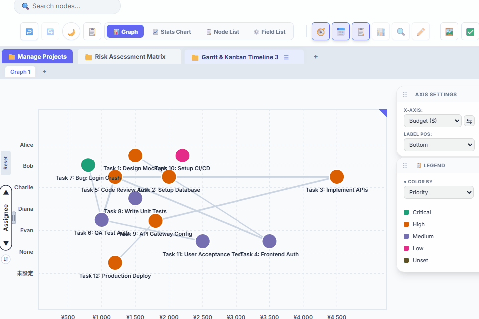
💡 操作イメージ（GIF動画）を見る
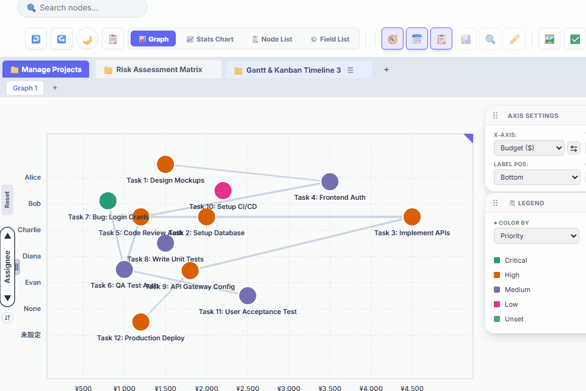
カスタムフィールドの定義（4種類のタイプ）
右側の「軸コントロールパネル」から独自の属性フィールドを追加・編集し、ノードの持つ情報構造を設計します。

💡 操作イメージ（GIF動画）を見る

💡 操作イメージ（GIF動画）を見る

💡 操作イメージ（GIF動画）を見る

💡 操作イメージ（GIF動画）を見る

選択肢ごとの色・形状・拡大率の設定
選択肢型フィールドでは、各選択肢に個別のビジュアルルールを設定し、情報密度と視認性を最大化できます。

💡 操作イメージ（GIF動画）を見る

💡 操作イメージ（GIF動画）を見る

💡 操作イメージ（GIF動画）を見る

ドラッグ＆ドロップによる項目の並び替え（軸の順序移動）
選択肢型フィールドの項目の並び順を変えることで、グラフ・ガントビューの表示順序をコントロールできます。

💡 操作イメージ（GIF動画）を見る

💡 操作イメージ（GIF動画）を見る

軸マッピングと拡大率スケーリングの仕組み
各軸（X・Y・色・形状・グループ）に任意のフィールドをアサインすることで、同じデータを複数の切り口から可視化できます。

💡 操作イメージ（GIF動画）を見る

💡 操作イメージ（GIF動画）を見る

💡 操作イメージ（GIF動画）を見る


グループ枠囲み（Group）
軸設定の「枠囲み（G）」項目にフィールドをアサインすると、同じ値を持つノードを自動的に楕円形の枠でグループ化して囲みます。

💡 操作イメージ（GIF動画）を見る

💡 操作イメージ（GIF動画）を見る

フィルタリング（ノードの絞り込み表示）
フィルタパネルを使用して、特定の条件に一致するノードのみをキャンバスや統計に反映させることができます。

💡 操作イメージ（GIF動画）を見る

💡 操作イメージ（GIF動画）を見る

💡 操作イメージ（GIF動画）を見る

統計情報パネル（数値集計）
画面右側の「📊 統計情報」パネルでは、現在のプロジェクトデータ（ノード総数や、各フィールド項目のデータ件数分布など）をリアルタイムで集計し、数値（テキスト）として一目で確認できます。

💡 操作イメージ（GIF動画）を見る

💡 操作イメージ（GIF動画）を見る

凡例パネルとキャンバス内ノード検索
大量のノードを扱う際も、凡例と検索機能で素早く目的のノードを特定できます。

💡 操作イメージ（GIF動画）を見る

💡 操作イメージ（GIF動画）を見る

一括編集（Bulk Edit）
複数のノードを同時に選択し、フィールド値の一括変更や一括削除が行えます。

💡 操作イメージ（GIF動画）を見る

💡 操作イメージ（GIF動画）を見る

💡 操作イメージ（GIF動画）を見る

マルチプロジェクトとグラフタブ管理
1つのセッションで複数のプロジェクトと、プロジェクトごとに複数のグラフ（ビュー設定）を並行して管理できます。

💡 操作イメージ（GIF動画）を見る

💡 操作イメージ（GIF動画）を見る

プロジェクトの暗号化保存とロード
プロジェクトファイル（.mnsb）をローカルに出力して保存します。機密情報を含む場合は強固なパスワード暗号化をかけることができます。

.mnsb 形式でダウンロードされます。
💡 操作イメージ（GIF動画）を見る

💡 操作イメージ（GIF動画）を見る

.mnsb ファイルを開こうとすると「パスワード解除モーダル」が自動で起動します。正しいパスワードを入力することで復号・ロードされます。
💡 操作イメージ（GIF動画）を見る

CSV インポート / エクスポートとバリデーション 👑 Premium
有料版では、ノードデータとフィールド定義をCSV形式でExcel等の外部システムと相互交換できます。インポート時は自動データ検証が走ります。
💡 操作イメージ（GIF動画）を見る

💡 操作イメージ（GIF動画）を見る

💡 操作イメージ（GIF動画）を見る

💡 操作イメージ（GIF動画）を見る


グラフの画像エクスポート（PNG / SVG）👑 Premium
有料版では、現在のキャンバスに表示されているグラフを高解像度の画像ファイルとして出力できます。プレゼンや報告書への貼り付けに最適です。